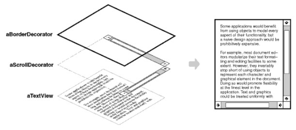
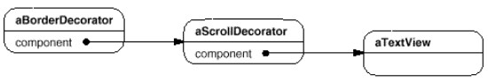
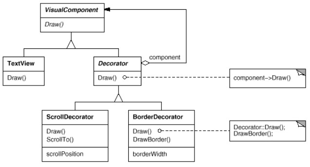
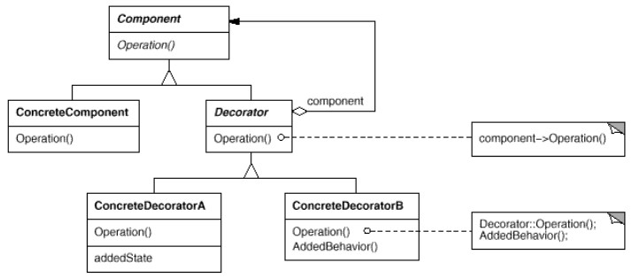

Exemple
On a parfois besoin d'ajouter des fonctionnalités à des objets individuels, mais pas à une classe entière.Par exemple, un framework pour faire des applications graphiques peut avoir besoin de rajouter des bordures ou du scrolling aux composants graphiques.
Hériter d'une bordure par héritage manque de souplesse car l'ajout d'une bordure se fait statiquement, et toutes les instances de la sous-classe auront une bordure ; le client ne peut pas choisir quel composant décorer.
Une approche plus flexible consiste à inclure le composant dans un autre objet qui ajoute la bordure.
Cet autre objet s'appelle un décorateur.
Le décorateur se conforme à l'interface du composant qu'il décore, sa présence est donc transparente pour le client.
Le décorateur fait suivre sa requête au composant, en faisant des choses supplémentaires (avant ou après avoir fait suivre), comme dessiner une bordure.
Comme le processus est transparent, on peut imbriquer des appels à plusieurs décorateurs, ajoutant ainsi autant de fonctionnalités que l'on veut.  Diagramme objet qui montre comment composer un composant texte avec deux décorateurs :  Diagramme de classe correspondant :  Le plus important :
TextViewetDecoratorimplémentent la même interface.-
Decoratorcontient une instance du composant à décorer (TextView),
ainsi qu'un constructeur prenant cette instance en paramètre.
Voir le code source de cet exemple dans ExempleGOF.java.
A l'exécution :
java ExempleGOF
=== c1 (pas de décoration) === TextView.draw() === c2 (décoration par ScrollDecorator) === ScrollDecorator.addedBehaviour() TextView.draw() === c3 (décoration par BorderDecorator) === BorderDecorator.addedBehaviour() TextView.draw() === c4 (décoration par ScrollDecorator et BorderDecorator) === ScrollDecorator.addedBehaviour() BorderDecorator.addedBehaviour() TextView.draw()Noter qu'on fait :
VisualComponent c = new BorderDecorator(new ScrollDecorator(new Textview()));Si on faisait le contraire :
VisualComponent c = new ScrollDecorator(new BorderDecorator(new Textview()));on aurait le scrolling à l'extérieur de la bordure !
Imaginez cet exemple implémenté avec des sous-classes ; pour permettre toutes les combinaisons, on aurait :
- une superclasse :
TextView
- des sous-classes :
TextWithBorder, TextWithScroll, TexteWithScrollAndBorder, TextWithBorderAndScroll ...
Le patttern decorator évite cette multiplication de classes.
Structure
Illustration possible
Un composant simple :
Component a = new ConcreteComponent(); a.operation(); |
|
Un composant décoré :
Component a = new ConcreteDecoratorA(
new ConcreteComponent());
a.operation();
|
|
Un composant doublement décoré :
Component a = new ConcreteDecoratorB(
new ConcreteDecoratorA(
new ConcreteComponent()));
a.operation();
|
Diagramme original (gof)
Component: interface ou classe abstraite.ConcreteComponentimplements ou extendsComponent.-
Decoratorimplements ou extendsComponentet contient une instance deComponent.
Cette instance est décorée. ConcreteDecoratorA,ConcreteDecoratorBhéritent deDecorator.
Exercice : Décorateur HTML
Exercice : Carrés décorés
Remarques
- Permet aussi d'appliquer plusieurs fois la même décoration (par ex document avec 2 bordures).
- Le composant décoré ne sait même pas qu'il peut être décoré (transparence du pattern).
-
Attention : Un composant non décoré et un composant décoré ne sont pas identiques (au sens
equals()).
Lorsqu'on utilise ce pattern, on ne peut pas utiliser l'identité des composants.
Décorateurs dans java.io
L'API originale utilise largement Decorator (voir page I / O).Par exemple :
try{
LineNumberReader lnr = new LineNumberReader(new BufferedReader(new FileReader("test.txt")));
String curLine = "";
int lNum = 0;
while((curLine = lnr.readLine()) != null){
lNum = lnr.getLineNumber();
System.out.println(lNum +"\t "+ curLine);
}
}
catch (IOException e) {
e.printStackTrace();
}
(code dans LineNumberReaderExample.java)
On a bien des décorateurs :
-
FileReaderest le composant de base.
Fournit une méthoderead()pour lire des caractères. -
BufferedReaderdécore unReader:
- en mettant les caractères dans un buffer pour pouvoir travailler dessus (gain de performance).
- en fournissant notamment une méthodereadLine(). -
LineNumberReaderdécore unReaderen ajoutant notamment une méthodegetLineNumber().
LineNumberReader est déjà un BufferedReader, à la place de :
LineNumberReader lnr = new LineNumberReader(new BufferedReader(new FileReader("test.txt")));
on aurait pu faire :
LineNumberReader lnr = new LineNumberReader(new FileReader("test.txt"));
Autre exemple
Cet exemple tiré de stackoverflow illustre d'autres utilisations de Decorator :On a un objet sérialisé dans un fichier gzippé, et on veut l'utiliser.
On lit le fichier :
FileInputStream fis = new FileInputStream("/path/to/objects.gz");
Pour de meilleures performances, on stocke le résultat en mémoire (voir BufferedReaderCompare.java) :
BufferedInputStream bis = new BufferedInputStream(fis);Il faut aussi "dé-gzipper" le fichier :
GzipInputStream gis = new GzipInputStream(bis);Et désérialiser l'objet :
ObjectInputStream ois = new ObjectInputStream(gis);On peut maintenant utiliser notre objet :
SomeObject someObject = (SomeObject) ois.readObject();Tout ça aurait pu être écrit en une seule ligne :
ObjectInputStream ois = new ObjectInputStream(
new GzipInputStream(
new BufferedInputStream(
new FileInputStream("/objects.gz")
)
)
);
SomeObject someObject = (SomeObject) ois.readObject();